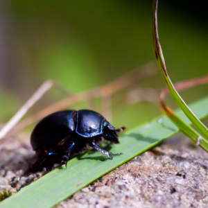
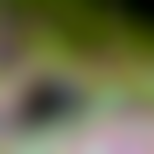
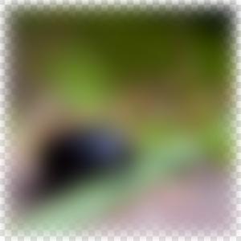

RecursiveBlur
Blurs repeatedly, providing a strong blur effect. More...
Inherits Item
This type was introduced in QtGraphicalEffects 1.0.
Properties
Signal Handlers
Detailed Description
The RecursiveBlur effect softens the image by blurring it with an algorithm that uses a recursive feedback loop to blur the source multiple times. The effect may give more blurry results than GaussianBlur or FastBlur, but the result is produced asynchronously and takes more time.
| Source | Effect applied |
|---|---|
 |
Example
The following example shows how to apply the effect.
import QtQuick 2.0 import QtGraphicalEffects 1.0 Item { width: 300 height: 300 Image { id: bug source: "images/bug.jpg" sourceSize: Qt.size(parent.width, parent.height) smooth: true visible: false } RecursiveBlur { anchors.fill: bug source: bug radius: 7.5 loops: 50 } }
Property Documentation
cached : bool |
This property allows the effect output pixels to be cached in order to improve the rendering performance.
Every time the source or effect properties are changed, the pixels in the cache must be updated. Memory consumption is increased, because an extra buffer of memory is required for storing the effect output.
It is recommended to disable the cache when the source or the effect properties are animated.
By default, the property is set to false.
loops : int |
This property defines the amount of blur iterations that are going to be performed for the source. When the property changes, the iterative blurring process starts. If the value is decreased or if the value changes from zero to non-zero, a snapshot is taken from the source. The snapshot is used as a starting point for the process.
The iteration loop tries to run as fast as possible. The speed might be limited by the VSYNC or the time needed for one blur step, or both. Sometimes it may be desirable to perform the blurring with a slower pace. In that case, it may be convenient to control the property with Animation which increases the value.
The value ranges from 0 to inf. By default, the property is set to 0.
| Output examples with different loops values | ||
|---|---|---|
 | ||
| loops: 4 | loops: 20 | loops: 70 |
| radius: 7.5 | radius: 7.5 | radius: 7.5 |
progress : real |
This property holds the progress of asynchronous source blurring process, from 0.0 (nothing blurred) to 1.0 (finished).
radius : real |
This property defines the distance of neighboring pixels which influence the blurring of individual pixels. A larger radius provides better quality, but is slower to render.
Note: The radius value in this effect is not intended to be changed or animated frequently. The correct way to use it is to set the correct value and keep it unchanged for the whole duration of the iterative blur sequence.
The value ranges from (no blur) to 16.0 (maximum blur step). By default, the property is set to 0.0 (no blur).
| Output examples with different radius values | ||
|---|---|---|
| radius: 2.5 | radius: 4.5 | radius: 7.5 |
| loops: 20 | loops: 20 | loops: 20 |
source : variant |
This property defines the source item that is going to be blurred.
transparentBorder : bool |
This property defines the blur behavior near the edges of the item, where the pixel blurring is affected by the pixels outside the source edges.
If the property is set to true, the pixels outside the source are interpreted to be transparent, which is similar to OpenGL clamp-to-border extension. The blur is expanded slightly outside the effect item area.
If the property is set to false, the pixels outside the source are interpreted to contain the same color as the pixels at the edge of the item, which is similar to OpenGL clamp-to-edge behavior. The blur does not expand outside the effect item area.
By default, the property is set to false.
| Output examples with different transparentBorder values | ||
|---|---|---|
|  | |
| transparentBorder: false | transparentBorder: true | |
| loops: 20 | loops: 20 | |
| radius: 7.5 | radius: 7.5 |